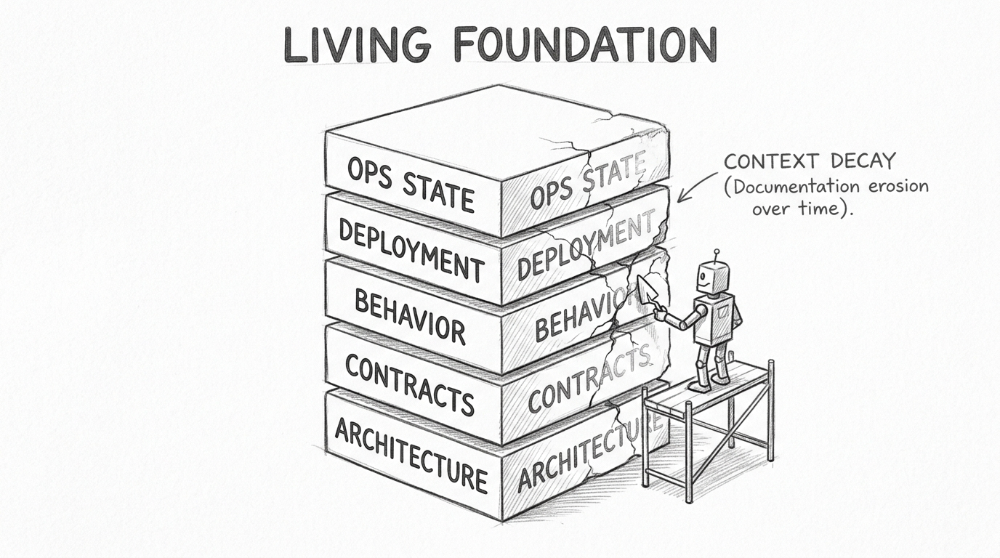
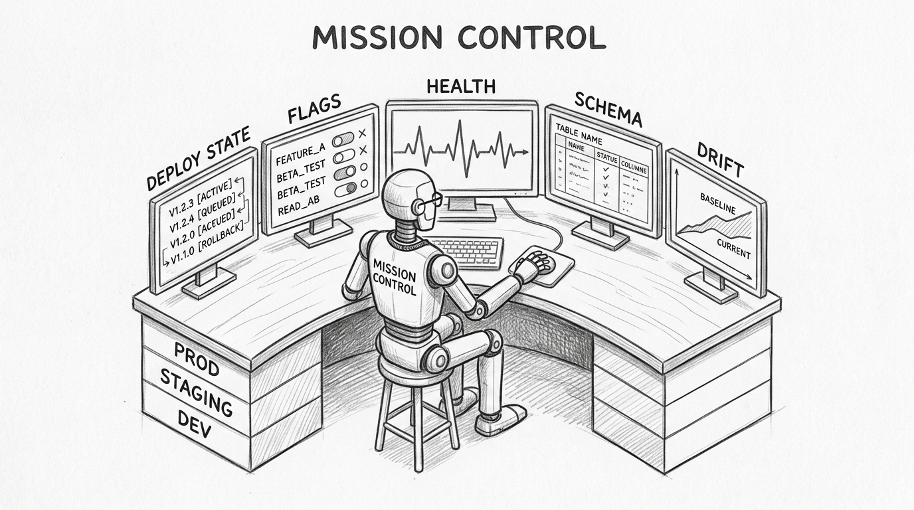
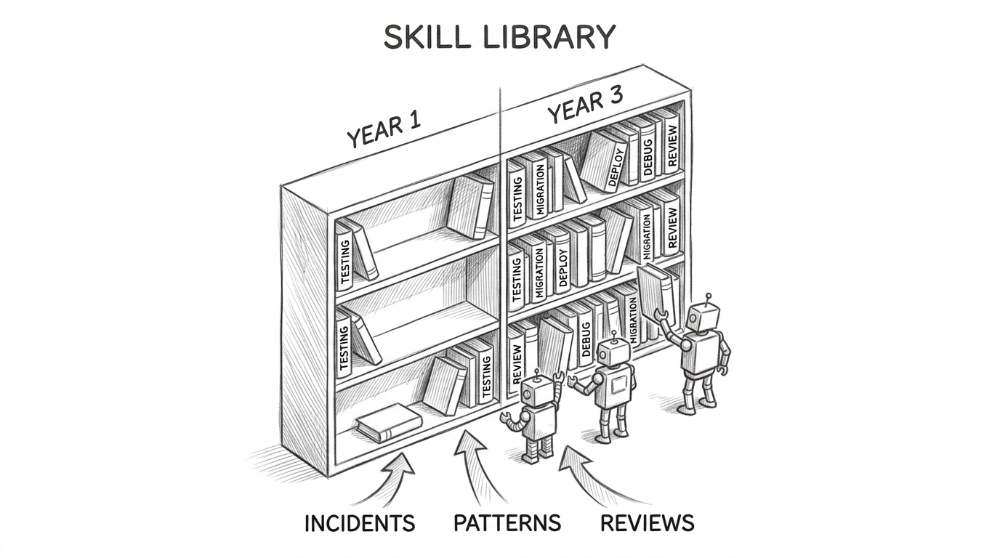
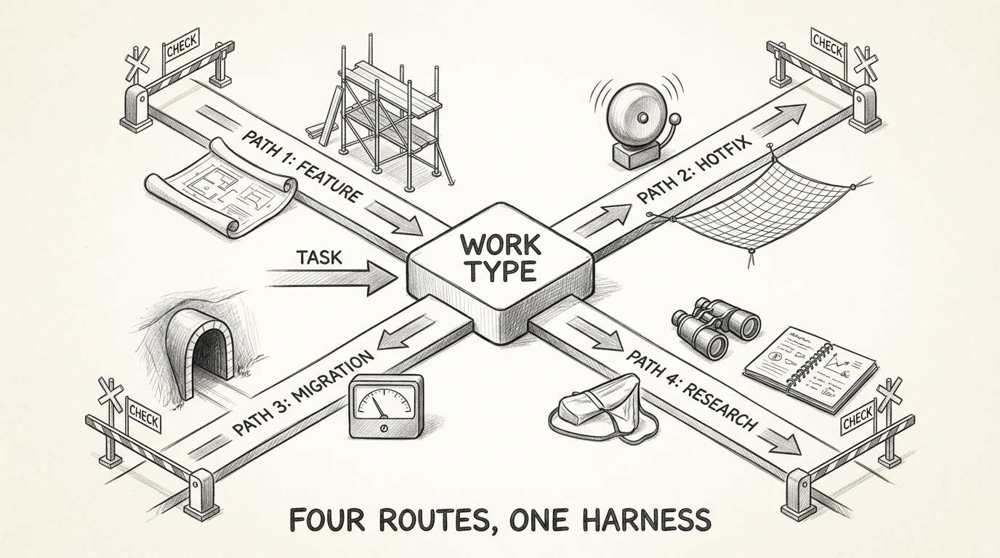

AI Works When You Build for It
AI Works When You Build for It
AI writes your code. The question is what tells it what to write, how to verify it, and where to ship it. The answer is not a better model. It is a system — ground truth about your product, tools that expose your environments, skills that encode your team's judgment, and defined routes through different types of engineering work. Building that system is the actual engineering.
This requires a mindset shift most teams never make. You are not using AI tools. You are building infrastructure for AI. Every time an agent fails, you do not switch models — you build a guardrail. Every time an agent asks something it should already know, you do not answer — you encode the answer in context. Every successful pattern becomes a skill. Every failure sharpens the harness. The teams that compound their gains adopted this builder's mindset. The teams stuck at marginal improvements are still configuring tools.
flowchart TD
H([" Ground Truth "])
style H fill:#455a64,color:#fff,stroke:#90a4ae,stroke-width:3px,font-weight:bold,font-size:18px
Every software product has essential truths an agent must understand before it can contribute meaningfully:
Architecture: how the system is organized, what depends on what, which boundaries are real and which are aspirational.
Contracts: how services communicate — API schemas, event formats, integration protocols, shared data models.
Behavior guarantees: what the tests prove, which invariants are enforced, where the coverage has known gaps.
Deployment topology: how code reaches users — pipeline stages, environment differences, rollback mechanisms, the feature flag system.
Operational state: what is happening right now — which services are healthy, which are degraded, what changed in the last deploy, what incidents are active.
Everyone writes context files on day one. The challenge is keeping them alive.

Context files decay. Code evolves, documentation stays frozen. A service migrates databases, the architecture doc still references the original schema. Within months, agents operate on a map of a system that no longer exists. Stale context is worse than no context — the agent builds on confident misinformation.
Managing context lifecycle requires the same discipline as managing code:
- Same-commit rule: when code changes, context changes in the same pull request. Same PR.
- Review rigor: treat context diffs the way you treat code diffs. A stale context file is a bug.
- Pruning: archive the obsolete parts. Each file describes what the agent needs now, not what mattered last quarter.
- Staleness detection: if a context file references a function, endpoint, or service that no longer exists, flag it automatically.
48% of documentation traffic now comes from agents, not humans. The ground truth you maintain is infrastructure, not paperwork.
flowchart TD
H([" Build Tools "])
style H fill:#455a64,color:#fff,stroke:#90a4ae,stroke-width:3px,font-weight:bold,font-size:18px
Ground truth describes what your system IS. Tools let AI see what your system is DOING.
Most AI engineering happens in a vacuum. The agent reads source code. It cannot see that the checkout service has been degraded for two hours, that a feature flag redirected traffic to a new provider, that the staging database schema drifted from production last week, or that the last three deployments to a critical service all rolled back.
This gap between code and runtime reality is where most agent failures begin. The agent writes a change that compiles and passes tests but targets a service mid-migration, depends on a feature that was disabled yesterday, or assumes a schema that no longer exists in the target environment.
Build tools that close this gap — specific to your product, your infrastructure, your operational reality:
- Deployment state: what version runs in each environment, what changed since the last release, where rollbacks happened.
- Feature flags: what is active, what is in experiment, what is scheduled to change.
- Service health: current status, recent incidents, degradation trends across environments.
- Schema state: the actual database schema in dev, staging, and production — not the documented one.
- Environment drift: where lower environments have diverged from production.

These give the agent the situational awareness that a senior engineer accumulates over years. The agent knows the checkout service is degraded before it tries to modify it. It knows staging and production schemas diverged before it writes a migration.
Linters serve a different purpose. They encode your team's engineering taste into automated rules — error messages that explain not just what is wrong but why the convention exists. One engineer's judgment, enforced fleet-wide, on every agent session.
Fewer tools, better scoped, produce better results than an unrestricted menu. Every tool should earn its place. Constraint beats abundance.
flowchart TD
H([" Skills "])
style H fill:#455a64,color:#fff,stroke:#90a4ae,stroke-width:3px,font-weight:bold,font-size:18px
Tools give agents capabilities. Skills give them judgment — and that judgment accumulates.
A prompt says "write a test." A skill says "write an integration test against the real database, behavior-focused, never mock the data layer — mock/prod divergence caused a production incident last quarter."
The prompt produces a test. The skill produces your team's test — encoding decisions that took years of production incidents to learn.
Skills compound. More importantly, skills evolve.
When a deployment fails, the postmortem generates a new skill or sharpens an existing one. When a code pattern causes repeated bugs, the fix becomes a skill. When someone discovers a better approach to migrations, the migration skill gets a commit — reviewed, merged, available to every agent immediately.
This is the mechanism that makes the SDLC self-improving. Each development cycle produces artifacts: incident reports, successful patterns, verified approaches. These feed back into the skill library. The skill library feeds into agent behavior. The system gets smarter with every iteration — not because the model improved, but because the team's encoded judgment deepened.

Skills can be shared across teams and projects. A payment processing skill refined by one team becomes available to every team touching payments. An infrastructure skill developed for one service applies to every similar migration. A debugging skill learned from a production incident prevents the same class of failure everywhere.
Over time, the skill library becomes the most accurate representation of how the organization actually builds software. More current than any wiki. More precise than any onboarding document. Senior engineering judgment, made into infrastructure that the whole system can access.
The distinction matters: skills are not prompts. Prompts are disposable. Skills are version-controlled, peer-reviewed, and maintained — software, treated with the same rigor as the code they guide.
flowchart TD
H([" Routes "])
style H fill:#455a64,color:#fff,stroke:#90a4ae,stroke-width:3px,font-weight:bold,font-size:18px
A new feature is not a production hotfix is not a migration is not a refactor. Each type of work has different context needs, different tool configurations, different skills, different verification requirements. Running them all through one generic AI workflow is why most teams plateau.
Define your routes:
New feature: spec → plan → implement → test → review → deploy → observe. Loads product docs and architecture context. Activates design and testing skills. Verification: acceptance criteria.
Production hotfix: alert → diagnose → fix → verify → deploy → postmortem. Loads incident data and monitoring. Activates debugging and root-cause skills. Verification: regression prevention.
Migration: characterize → plan → parallel-run → validate → cutover. Loads contracts and dependency maps. Activates characterization testing skills. Verification: behavioral parity.
Research: questions → search → analyze → synthesize → verify → publish. Loads knowledge base. Activates domain expertise and fact-checking skills. Verification: source validation.

Each route assembles a specific combination of ground truth, tools, skills, and verification gates. The feature route needs product specifications. The hotfix route needs live observability data. The migration route needs characterization tests. Giving every route the same context wastes the agent's attention on irrelevant information and misses what actually matters.
Different products within the same organization may need entirely different routes. A real-time trading system has different verification gates than a content management system. A compliance-regulated service has different approval requirements than an internal tool.
Routes are the missing abstraction. Define the paths your engineering work actually follows, then build harness configurations for each.
flowchart TD
H([" The Loop "])
style H fill:#455a64,color:#fff,stroke:#90a4ae,stroke-width:3px,font-weight:bold,font-size:18px
Routes are linear paths through a problem. The system that makes AI engineering compound is the loop that connects them.
Build → deploy → observe → diagnose → fix → evolve. Most teams stop at deploy. Almost none close the full loop — where production signals flow back and the system itself improves.
Observability detects an anomaly. An agent diagnoses root cause. The team triages. An agent implements a fix. Verification confirms recovery — auto-close if metrics stabilize, rollback if they do not. Then the step most teams skip: the incident becomes a skill. The context files update. The next cycle starts with a better harness than the last.
![Hand-drawn pencil sketch showing a circular water cycle ecosystem. Code flows from a BUILD mountain down through DEPLOY rapids into a PRODUCTION ocean. Observation mist rises from the ocean surface labeled OBSERVE. Storm clouds form overhead labeled DIAGNOSE. Rain falls as FIX droplets into a VERIFY lake, which feeds a river flowing back to the BUILD mountain. Small robot figures work at each stage of the cycle. The ecosystem is self-sustaining, with the sun labeled GROUND TRUTH shining over everything. Title at bottom: THE CLOSED SYSTEM.](images/closed-loop-sketch.jpg)
Trust governs how much runs autonomously. In development: full auto-remediation. In staging: agent-proposed, human-approved. In production: human-in-the-loop with agent assistance. The math is demanding: at 5% per-step failure rate, an agent taking 20 sequential actions has a 64% chance of at least one failure. Fully autonomous operation requires less than 1% end-to-end failure rate.
Most teams are not there. Build the loop anyway. Gate it with human approval. Remove the gates when the data says you can.
The mindset that makes all of this work: every failure is a harness improvement. Every success is a skill to encode. Every incident is a route to refine. Your team's job is not to use AI tools. It is to build the system that makes AI effective — and to keep building it, every sprint, as the product evolves.
The harness is not a product you install. It is ground truth, tools, skills, routes, and a feedback loop — built specifically for your product, maintained with the same discipline as the product itself. The model changes every quarter. The system you build around it compounds every quarter after. AI engineering done right is not about the AI — it is about building for it, the same way the industry has always built infrastructure around powerful, unreliable components.
References
- Peter Pang (2026). "Why Your AI-First Strategy Is Probably Wrong." x.com
- OpenAI / Ryan Lopopolo (2026). "Harness Engineering." openai.com
- Anthropic (2026). "Effective Harnesses for Long-Running Agents." anthropic.com
- Birgitta Boeckeler / Martin Fowler (2026). "Harness Engineering." martinfowler.com
- Mintlify (2026). "Agent Documentation Traffic Data." mintlify.com
- Redis (2026). "AI Agent Architecture: Build Systems That Work." redis.io
- Faros AI (2026). "State of Engineering Report." faros.ai
- State of IaC (2026). "State of Infrastructure as Code 2026." stateofiac.com